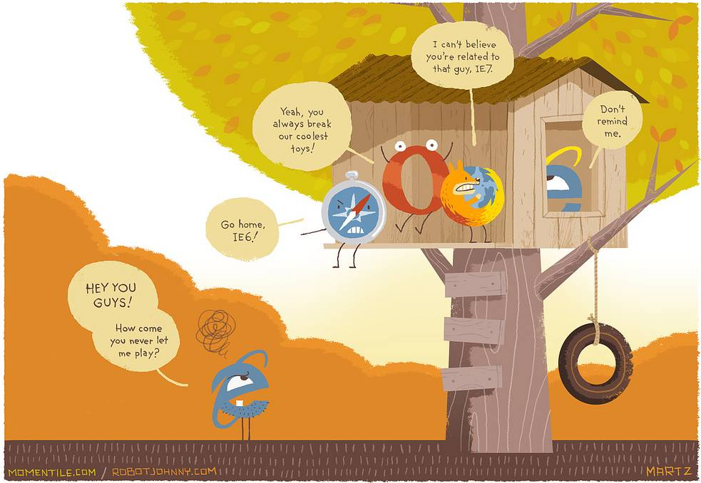

Votre ordinateur est en danger, vous êtes en train de surfer sur internet à l'aide d'un logiciel obsolète. Les risques sont multiples et certains sont très sérieux :
Pour remédier à ce problèmes, vous pouvez télécharger et installer un logiciel équivalent à jour :
Ces logiciels bénéficient de mises à jour fréquentes assurant une sécurité et une compatibilité optimale avec les standards du web, et apportent un confort d'utilisation beaucoup plus important.
Vous pouvez également et plus simplement mettre à jour votre logiciel défectueux en installant sa nouvelle version, Internet Explorer 7. Malheureusement, cette version n'est toujours pas à 100% compatible avec les sites que vous pouvez être amenés à visiter, mais vous serez plus en sécurité en l'utilisant à la place de votre navigateur défectueux.
(de gauche à droite :)